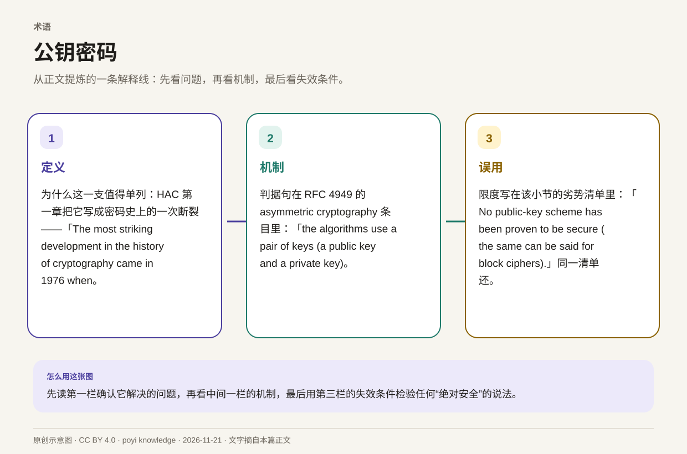

原理与机制
术语：公钥密码（Public-Key Crypto）。判据句在 RFC 4949 的 asymmetric cryptography 条目里：「the algorithms use a pair of keys (a public key and a private key) and use a different component of the pair for each of two counterpart cryptographic operations」。该条目把这分支写成现代密码学的一支，通俗称作 public-key cryptography，而 public-key cryptography 自身只有一条同义词指回 asymmetric cryptography——术语上两名一物，定义只写在非对称那侧；条目举例的对应运算除加密与解密外还有签名创建与签名验证。

为什么重要
为什么这一支值得单列：HAC 第一章把它写成密码史上的一次断裂——「The most striking development in the history of cryptography came in 1976 when Diffie and Hellman published New Directions in Cryptography.」同段接着说这篇论文引入了公钥密码概念，并给出了一个用于密钥交换的新方法；该条目只记这两点，不再替它加解决了密钥分配这类该段没有的判断。
应用与实例
用法边界由 HAC 第一章的优势清单给出：「Only the private key must be kept secret (authenticity of public keys must, however, be guaranteed).」同栏接着写公钥/私钥对可长期不变、以及许多公钥方案能给出相对高效的签名机制——量词必须保留，因为原文用的就是 many。因此该小节的适用叙述落在签名与密钥管理这一侧，而不是吞吐那一侧。
边界与攻击面
限度写在该小节的劣势清单里：「No public-key scheme has been proven to be secure (the same can be said for block ciphers).」同一清单还给出两条实操劣势：主流公钥方案的吞吐比最好的对称方案慢几个数量级，公钥尺寸通常明显更大，而签名尺寸也大于对称密钥技术给出的认证标签。该清单之后是一段比较小结，随后的小字注记 Remark 1.53 才给出理由——已知公钥方案都受比穷举更有效的捷径攻击，它举的例子只有大整数分拆（factoring）；该句属于那条 Remark，而不属于劣势清单本身。
历史与背景
年代与优先权事实写在 HAC 第一章的注记节：「Public-key cryptography was introduced by Diffie and Hellman [345].The first concrete realization of a public-key encryption scheme was the knapsack scheme by Merkle and Hellman [857].」注记用文献编号把每个判断归给被引论文，该条目照其措辞区分引入与第一个具体实现两层，不把它们合并成一句发明了公钥密码。
逐步示例与核验
定义检查模型
上位概念 → 区别特征 → 正例 → 反例 → 易混边界。正例必须落在外延内；反例必须刚好跨过边界；同义词不能代替定义。
参考出处
- Wikipedia search entry for 公钥密码. https://zh.wikipedia.org/w/index.php?search=%E5%85%AC%E9%92%A5%E5%AF%86%E7%A0%81
- RFC 4949: Internet Security Glossary, Version 2. https://www.rfc-editor.org/rfc/rfc4949